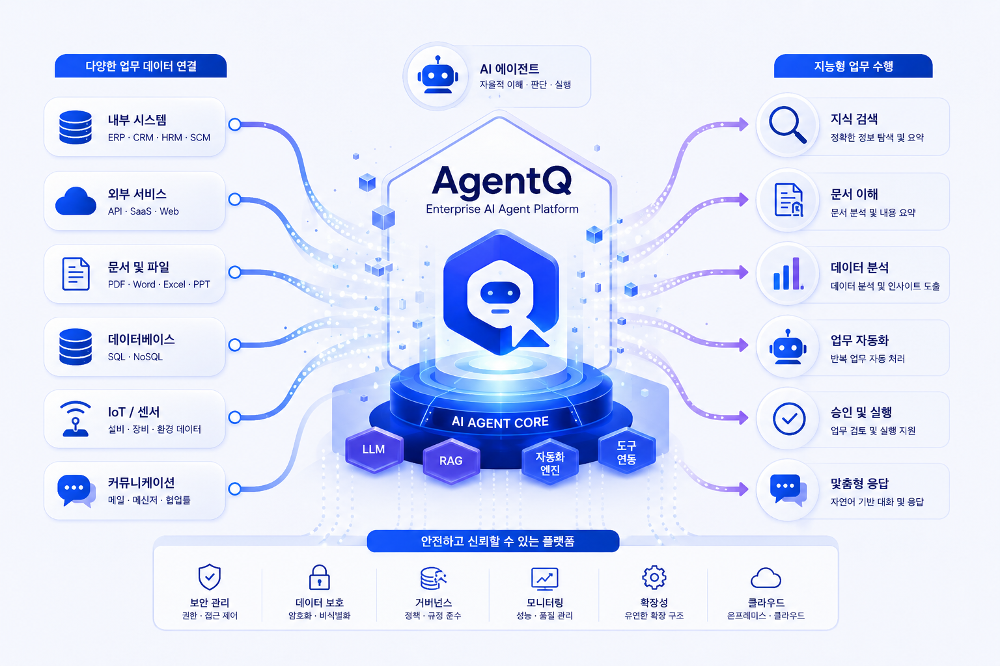

이의신청 서류 일괄 처리
입력 스캔 문서와 첨부 자료를 한 번에 접수
연계 OCR → 주소 표준화 → DB 조회 → 관련 규정 검색
산출물 확인 근거와 검토 항목을 담은 심사 보고서 초안
문서·음성·데이터베이스를 다루는 전문 에이전트가 업무를 나눠 맡고 중간 결과를 이어받아 검토 가능한 문서와 실행안까지 완성합니다.
사용자는 업무 포털에서 요청하고, 관리자는 모델·지식·보안·작업 흐름을 운영해 반복 가능한 AI 업무 체계를 만듭니다.

전문 에이전트, 문서·데이터 처리, 관리자 운영 체계가 하나의 업무 흐름으로 연결됩니다.
일반 질의부터 보고서와 회의록, 문서 심사와 안전관리까지 업무에 맞는 에이전트를 선택해 사용할 수 있습니다.

전문 에이전트 허브 — 프로토타입 예시 화면
문서·스캔본·데이터베이스를 업무에 맞게 전처리하고, 출처와 조회 조건을 남겨 사람이 결과를 확인할 수 있게 합니다.

RAG·문서 업무 포털 — 프로토타입 예시 화면
AI 서비스를 만드는 기능과 실제 운영에 필요한 권한·로그·모니터링을 한 콘솔에서 관리합니다.

AI 플랫폼 관리자 콘솔 — 프로토타입 예시 화면
문서와 데이터를 먼저 정리하고, 근거 검색·추론·검증을 거쳐 문서·승인·내보내기로 마무리합니다.
텍스트·음성·문서·스프레드시트와 데이터 조회 요청을 접수
보호 문서와 스캔 파일을 해제·인식하고 검색 가능한 형태로 정리
권한 범위의 문서·규정·벡터 DB에서 관련 근거와 출처를 탐색
사내 언어모델이 업무 목적에 맞게 요약·분석하고 다음 에이전트에 결과를 전달
근거 일치도·신뢰도·개인정보·보안 등급을 확인하고 필요한 보완을 요청
공식 문서와 분석 결과를 만들고 담당자 검토·승인 후 업무 시스템으로 전달
자료 유형에 맞는 처리 방식 비정형 문서, 구조화 데이터, 복합 업무를 각각 알맞은 도구와 에이전트로 연결합니다.
사내 문서와 규정에서 의미가 가까운 근거를 찾아 결합하고 출처와 보안 등급을 함께 제시
자연어 질문을 데이터베이스 조회로 바꿔 직접 집계하고 표·차트·조회 조건으로 결과를 설명
OCR·주소 표준화·DB 조회·분석·보고서처럼 여러 단계를 연결해 하나의 결과물로 완성
프로토타입은 서로 다른 전문 기능을 순서대로 연결해 사람이 검토할 수 있는 업무 결과물을 만드는 흐름을 보여줍니다.
입력 스캔 문서와 첨부 자료를 한 번에 접수
연계 OCR → 주소 표준화 → DB 조회 → 관련 규정 검색
산출물 확인 근거와 검토 항목을 담은 심사 보고서 초안
입력 거래 조건과 확인 대상 데이터를 지정
연계 DB 조회 → 데이터 분석 → 내규·법령 검색 → 보고서 작성
산출물 이상 징후, 판단 근거, 후속 확인 항목을 정리한 검토 문서

문서·데이터·규정이 함께 얽혀 있고, 결과물의 근거와 운영 통제가 필요한 업무에 적합합니다.
PDF·스캔본·오피스 문서·음성 기록을 DRM·OCR·STT로 정리해 검색·요약·검토해야 하는 환경
내규·법령·지침을 찾아 출처를 남기고 문서 내용과 대조하는 사전 검토·심사 업무
데이터베이스와 Excel·CSV를 자연어로 조회하고 통계·이상탐지·차트까지 만들어야 하는 업무
OCR·주소 표준화·DB 조회·규정 검색·보고서 작성을 멀티 에이전트 흐름으로 연결해야 하는 과정
분석과 근거를 정해진 양식의 보고서·회의록·검토서로 만들고 담당자 승인을 거쳐야 하는 조직
사내 sLLM과 지식베이스를 사용하고 모델·사용자·로그·가드레일을 관리자 콘솔에서 운영해야 하는 조직